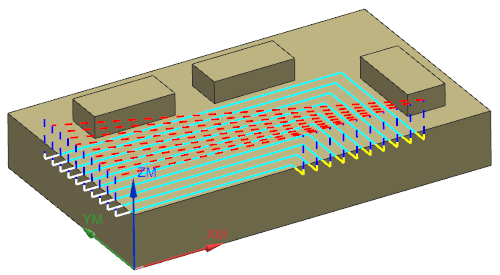

Estimated time to complete: 4–6 minutes
You will create a Floor and Wall milling operation, select the faces and walls to be machined, and generate the tool path.

Launch the Contain the cut region by extending the walls activity.